One love story, four unforgettable looks — a golden lace traditional, a red-coral Edo look, a beaded ivory gown, and a mint after-party moment, each styled to feel completely her own.
From the first consultation, we built a wardrobe that carried Ehmi through every chapter of the celebration: a soft gold traditional with a sculpted gele, a regal red-coral Edo look crowned with coral beads, a long-sleeve beaded ivory gown for the church, and a fringed mint dress to dance the night away.
Look One
The Traditional
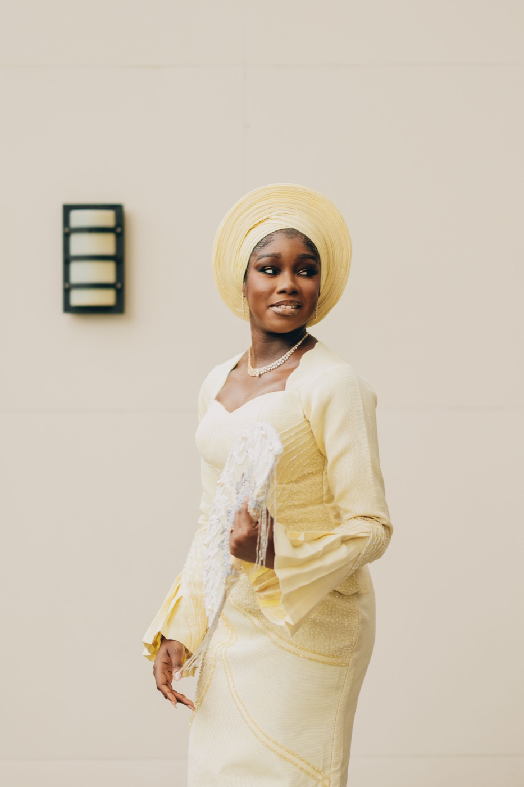
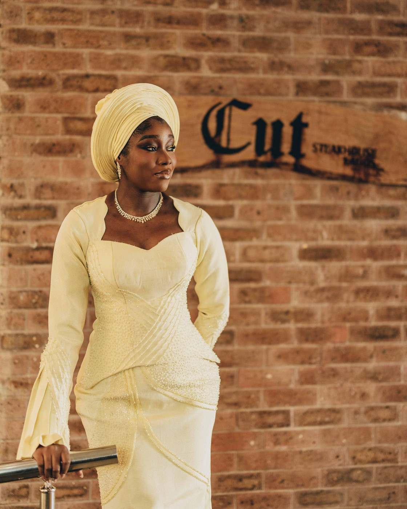
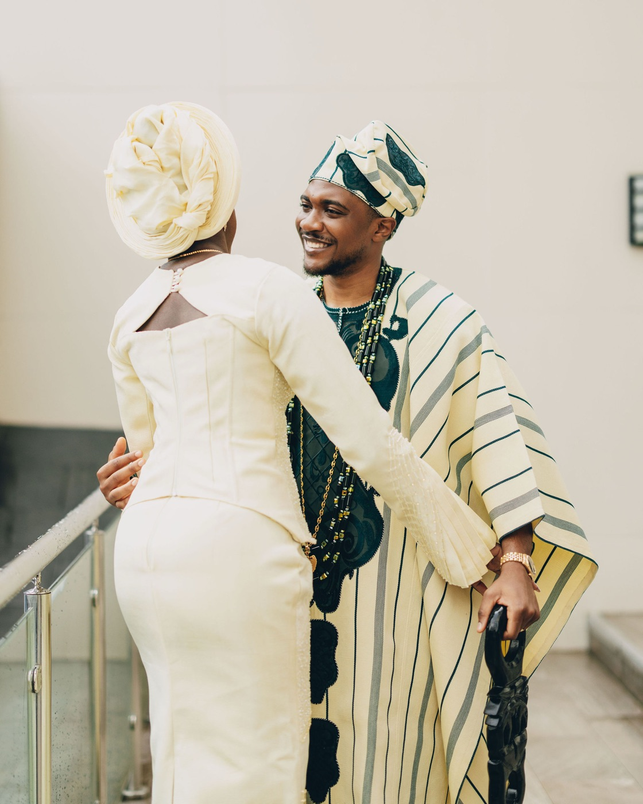
Look Two
The Edo Traditional
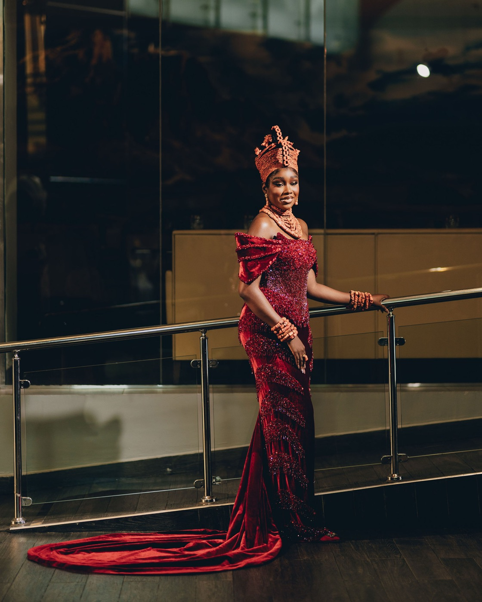
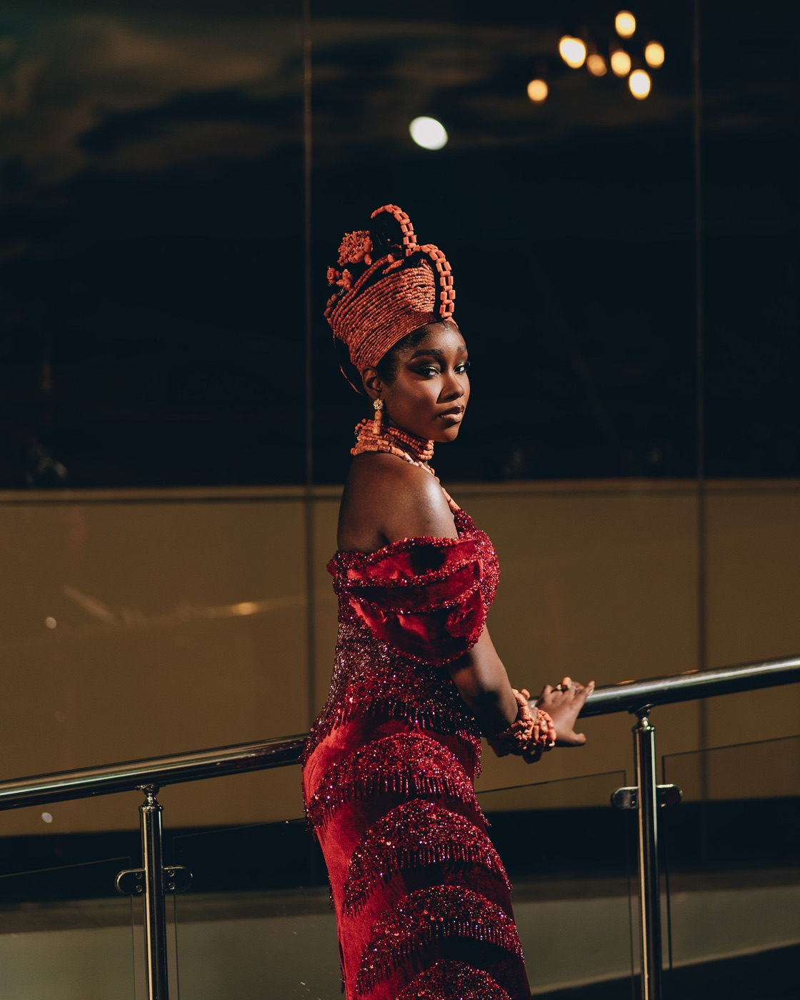
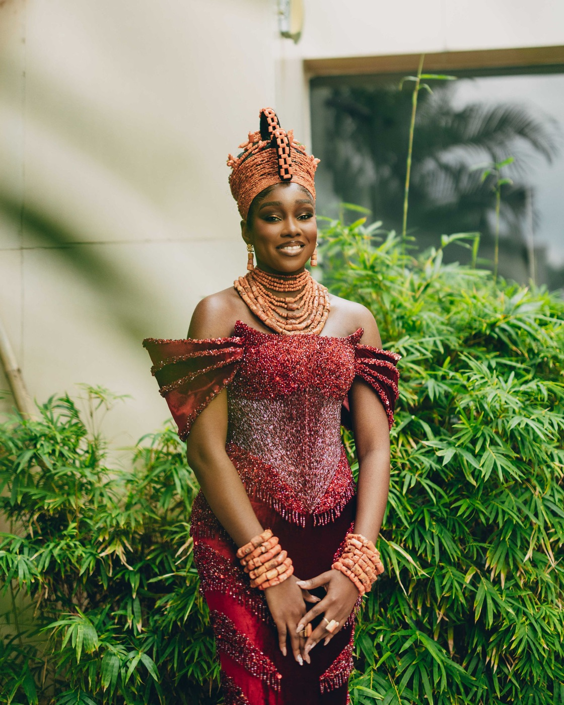
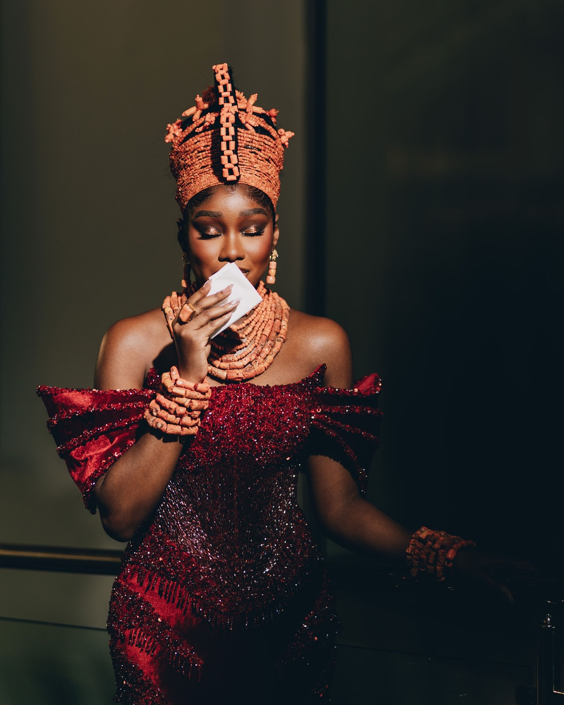
Look Three
The White Wedding

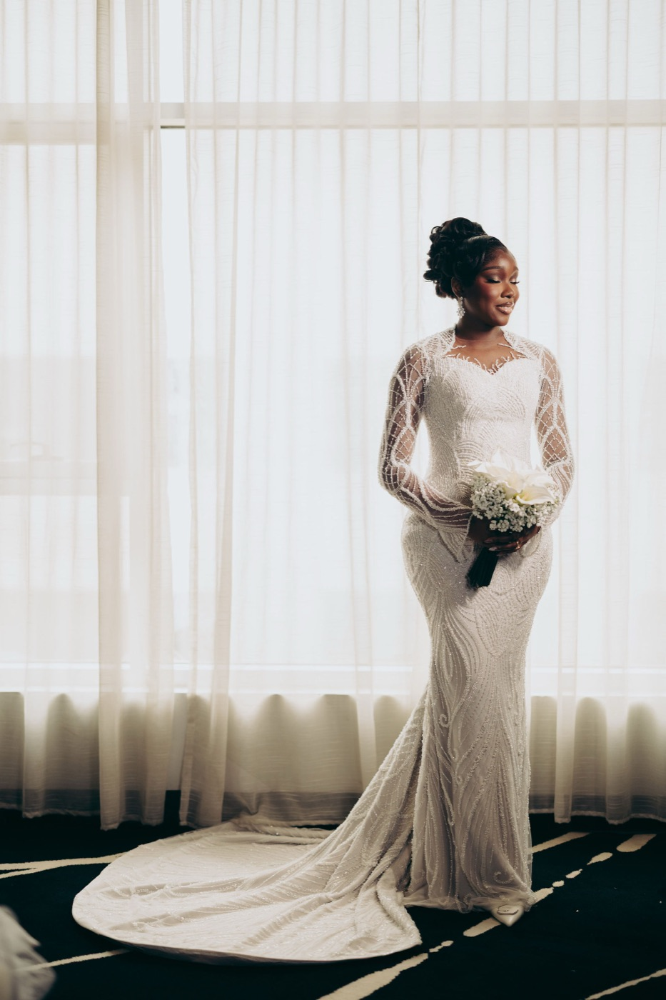
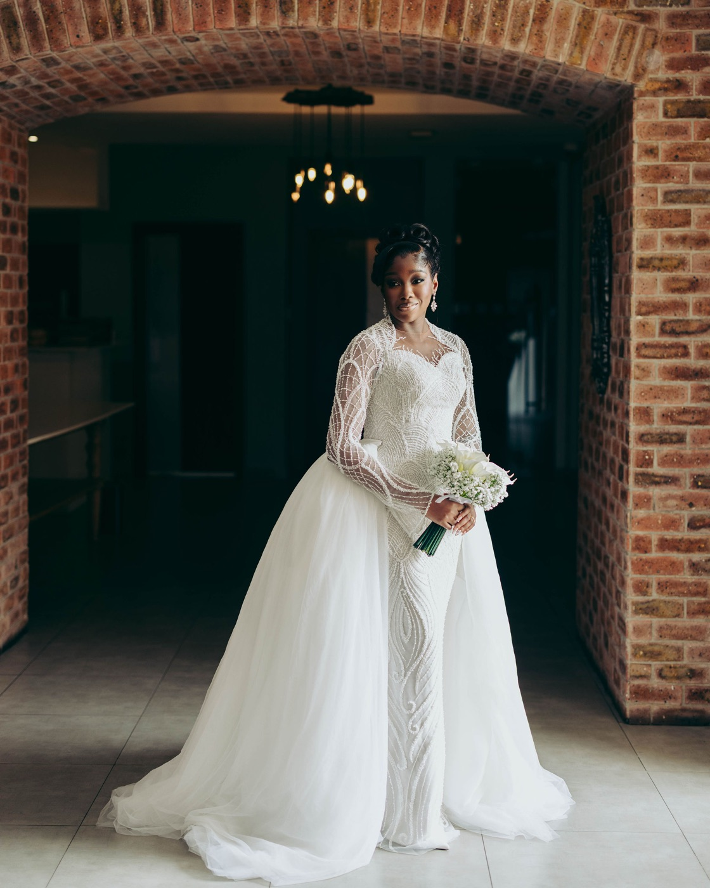
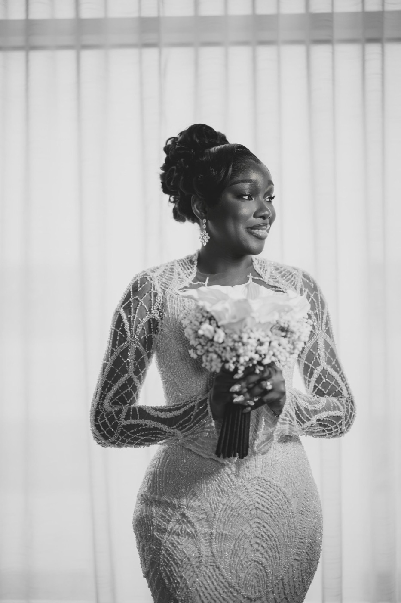
Look Four
The After Party
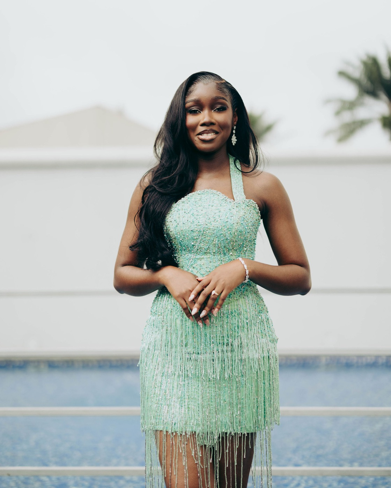
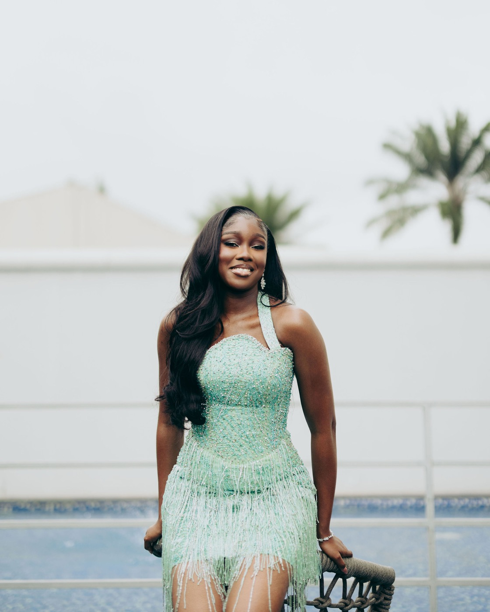
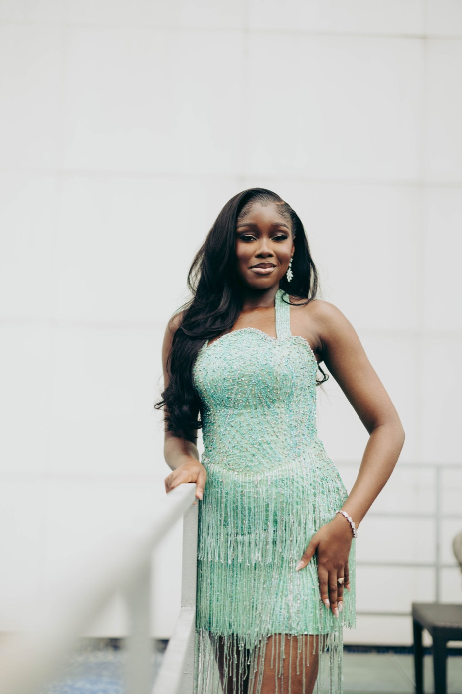
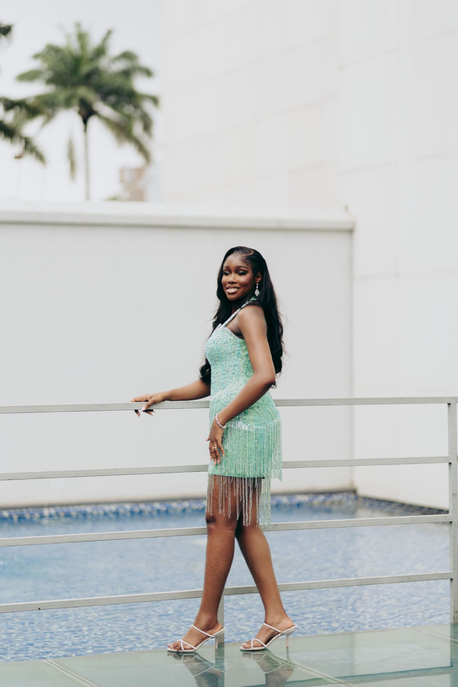
Her DearLover story
Planning my wedding from Canada meant I had to be very intentional about the people I trusted with different parts of my looks. I knew exactly what I wanted, and I had a clear vision for every event — from the pre-wedding to the court wedding, traditional wedding and white wedding. I can be very particular, especially when it comes to things like my hair and makeup, so it was important to me that whoever was styling me understood that. I didn't just want to look beautiful — I wanted every look to still feel like me. DearLover really understood that. We worked through the different looks and made sure each one had its own personality while still feeling connected to my overall wedding style.
What did you want your wedding wardrobe to make you feel?
I wanted to feel beautiful, but more importantly, I wanted to feel like myself — just elevated. I didn't want to wear anything simply because it was trendy or because that was what brides were expected to wear. I wanted every look to feel intentional: confident, feminine, elegant and still very Ehmi. I wanted to look at my pictures years later and still feel like the choices reflected who I was at that time.
What was your favourite look?
This is such a difficult question because every look had its moment! But my traditional look has a special place in my heart. There was something about seeing everything come together — the Edo outfit, the okuku hair, the makeup, the accessories — that just made me feel so beautiful.
What did DearLover mean to your wedding experience?
Honestly, it meant having someone who understood the vision and cared about the details as much as I did. As a bride planning from Canada, there were already so many moving parts to think about. Having DearLover handle my styling gave me a level of confidence and ease. I could be particular, change my mind, ask questions and really communicate what I wanted. It made the experience feel more personal, and I think that's what I'll always remember.